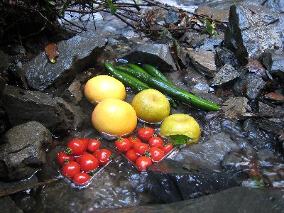
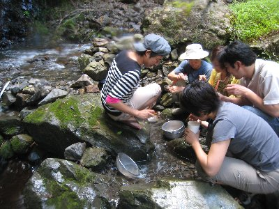
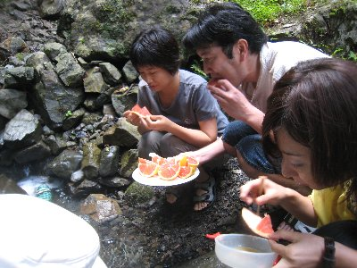

沢でそうめん流し | 2008年８月 幹事：きっかー |
|---|---|
| そうめん流しと言えば、縦割りにした竹に水とそうめんを流すのが一般的ではあるが、元から水が流れている沢で、そうめんを流してみよう！ と言う事で、安倍川支流のひとつに行って来ました。 ここは、わさび棚もある位に水が綺麗で、もちろん上流に人家とかはありません。ちょっと奥まっているため、車を置いてから歩いて行かなければなりませんが、人が入らないっていう証明ですから仕方ありませんね。 さて、わさび棚を横切り、沢沿いに進んだ少し先で、やることにはしたのですが、水量が多くて本流ではちょっと無理。かといって水が溜まっているようでは意味が無いし、汚いかも知れない。そんな条件の良い所を探し出して、そうめんを茹で、ついでに買った野菜等も冷やして、そうめん流し開始です！ | |
 この滝の上流でやりました |  おやおや〜水に浸かりすぎでは？ |
| 始めにチョロチョロッと流したら、そうめんがバラバラになってしまい掴み難い。じゃあ、まとめて流してみたら、ちょっと掴み易くなりました。流れも速くなく、水量も多くないけど、以外にそうめんを掴むのは大変です。ドンドン流れちゃいますから。でも、楽しい〜(^^♪ みんなでワイワイやりながら、緑深い山の中でそうめんを取っている姿は、はたから見たら異様でしょうね。まあ、誰も居ないから良いのだけれど。 そうめんを流し終わったら、ちょっと休憩をかねて、沢で冷やしていたキュウリを味噌付けてガブリ！ これまた、まいう〜！ もうひとつ、「そうらーめん」も茹でてこれは量が少なかったので、流すと無くなりそうだから、鍋からそのまま食べました。梨もみずみずしくておいしぃ〜 | |
|  野菜や果物も冷やします〜 |  分かりにくいけど、沢を囲んでいます！ |
| たんぱく質も補給したくて、豚シャブも。 あ〜、豚肉の旨さが実感！ 沢が恋しくなったところで、茶蕎麦を流してみることにしました。 茶蕎麦！ ついにそうめんから蕎麦です。 ついでと言っては何ですが、先ほど茹でた豚も沢でシャブってみました。まあ、茹でた豚肉を流したんですね。豚肉は浮きやすくて実に取りやすい！ さらには、皮をむいた梨も流しました。これまた浮きやすくてＯＫ！ さらにさらにプチトマトも流してみました。これは丸いために掴みにくい。 | |
|  果物だって沢で食べちゃいます♪ |  食べている後ろでは豪快な沢が・・・涼しいよ〜 |
| そうめんと蕎麦をたらふく食べて、本日のそうめん流しは終了です。 以外に時間は過ぎていて、一日遊べた感じです。次回は竹を用意して、ちゃんとしたそうめん流しを沢の水でやってみるのも良いかも知れませんね。 | |
| コメント＆写真 ｂｙ べっしー | |